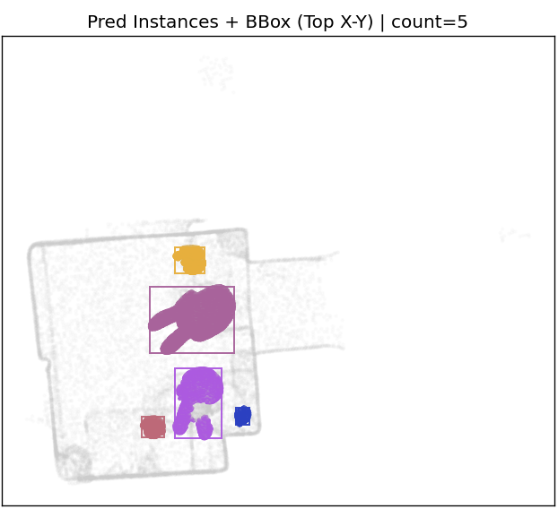
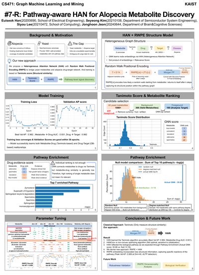

Research Interests
My goal is to develop robots that understand and act in the physical world the way humans do — grounding high-level reasoning in robust, uncertainty-aware perception and action. To this end I am currently focusing on the following topics, though not limited to them:
- Embodied AI & Vision-Language-Action (VLA) Models
- Autonomous Driving
- Semantic SLAM & 3D Scene Understanding
- 3D Perception (Instance Segmentation, Keypoints)
- Robot Policy Learning & Manipulation
- Physically Grounded, Interpretable AI
Projects
Short clip (3 s). Full demo on YouTube — see link.
Exploring LLM-guided Autonomous Robots
An LLM-guided autonomous mobile delivery robot. The stack integrates RTAB-Map localization, path planning, and vision-based object pick-up, letting the robot interpret natural-language instructions and carry out delivery tasks end to end.
ROS · Python · RTAB-Map · LLM · Path Planning

Nubzuki's Adventure — Segmentation & Rendering Contest
Class-agnostic 3D instance segmentation of Nubzuki (the KAIST mascot) synthesized in MultiScan, using a PCA-aware encoder, NubzukiPriorNet. I also produced a Gaussian-splatting-based rendered short film, Nubzuki's Adventure, compositing handcrafted 3D objects via z-buffering.
PyTorch · Gaussian Splatting · 3D Segmentation · PCA
J2-Hamiltonian Invariant–Driven Mode-Transition IMM for Maneuver Detection
Satellite maneuver detection using an Interacting Multiple Model (IMM) filter whose transition probability matrix is driven by the change in the J2-Hamiltonian invariant. The demo on the left is a live, interactive 3D visualization — drag to rotate, or open it full-screen. (Targeting an oral presentation at the KSAS Fall Conference 2026.)
MATLAB · Kalman Filter · IMM · Orbital Mechanics

Click to enlarge · PDF ↗
Pathway-aware HAN for Alopecia Metabolite Discovery
Bridged yeast metabolites with an alopecia drug-target network by proposing a Heterogeneous Graph Attention Network (HAN) with Random Walk Positional Encoding to surface candidate metabolites of interest.
PyTorch · Graph Neural Networks · HAN · Positional Encoding
Education
Experience
Contact
Feel free to reach out at hanes1207@kaist.ac.kr.